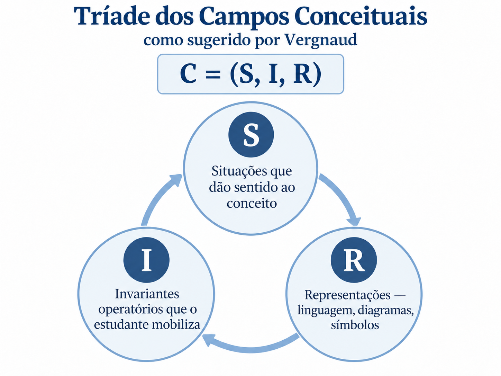
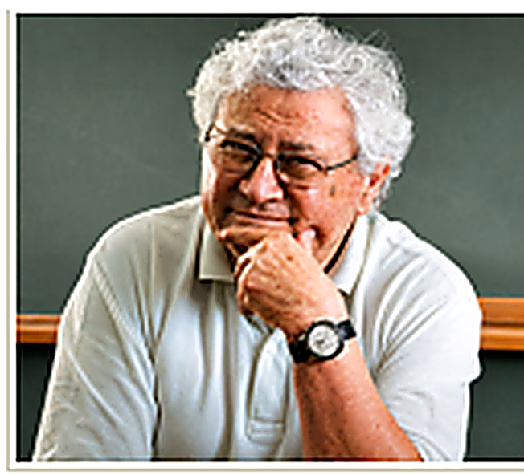
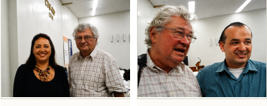

{{ d.no }}
{{ d.title }}
{{ d.body }}
- {{ it.t }}
em desenvolvimento
{{ pageLead }}
Ensino e aprendizagem · Sistema adaptativo · Pesquisa
Um ambiente adaptativo de aprendizagem e pesquisa sobre Estruturas Aditivas, fundamentado na Teoria dos Campos Conceituais de Gérard Vergnaud.
Comece pelo seu perfil


Gérard Vergnaud (1933–2021)Tríade dos Campos Conceituais: um conceito é a união de situações, invariantes e representações.Fundamentação científica
Para Gérard Vergnaud, um conceito não se aprende isolado: ele ganha sentido dentro de um campo — um conjunto de situações, invariantes e representações que se apoiam mutuamente.
As estruturas aditivas formam um desses campos. Somar e subtrair são apenas o cálculo; o que se aprende é a relação entre as quantidades em cada classe de situação.
Categorias de relações entre medidas
{{ c.rule }}
Categorias de relações entre transformações e relações
{{ c.rule }}
O que é o Gérard
Diante de um problema aditivo, muitos estudantes procuram palavras-chave — “ganhou” é somar, “perdeu” é subtrair — sem compreender a estrutura da situação.
O Gérard coloca a situação em primeiro lugar. Enquanto o estudante representa e resolve, o sistema registra cada ação — e esses dados alimentam tanto o retorno ao estudante quanto a pesquisa.
{{ c.body }}
Ensino e aprendizagem + Sistema adaptativo + Pesquisa científica
{{ d.body }}
Como funciona
{{ s.body }}
Representações
Cada representação destaca um aspecto da mesma relação. Alternar entre elas é parte da aprendizagem.
Ecossistema Gérard
Cada produto nasce de um dos elementos do conceito — C = (S, I, R): situações que dão sentido, invariantes que o estudante mobiliza e representações que o expressam.
{{ pl.def }}
Gérard
{{ p.body }}
Para quem é
Adaptatividade do sistema
Cada ação vira dado. O sistema modela o que o estudante já domina e propõe a próxima situação dentro da sua Zona de Desenvolvimento Proximal.
Análise da modelagem
Após cada tentativa, o estudante pode justificar como interpretou a situação e onde posicionou cada elemento no diagrama de Vergnaud. As respostas ficam vinculadas à tentativa, sem alterar o diagrama.
Para a pesquisa: une o que o estudante fez, como fez e o que diz ter pensado — dados para analisar invariantes operatórios.
Chat do Gérard
O estudante escreve sua dúvida ou escolhe a área em que precisa de apoio. O Gérard responde com dicas que orientam a leitura da situação — sem entregar a resposta.
Pesquisa e publicações
{{ p.authors }}
{{ p.venue }}
Demonstração
Três demonstrações interativas: arraste os quadradinhos, preencha o diagrama e observe o retorno a cada ação.
Instituições e parcerias
Equipe
{{ m.role }}
{{ m.org }}

Estruturas aditivas
Na teoria de Vergnaud, o campo aditivo reúne as situações que se resolvem por adição, subtração ou pela combinação das duas. O que muda de uma classe para outra é a relação entre as quantidades.
{{ c.rule }}
{{ c.body }}
“{{ c.example }}”
Histórico
C = (S, I, R)
{{ pl.intro }}
Gérard
{{ p.long }}
Projetos e experimentos
{{ p.body }}
{{ pubCountLabel }}
{{ p.authors }}
{{ p.venue }}
Nenhuma publicação encontrada
Tente outro termo ou limpe os filtros.
Fonte: Currículo Lattes da equipe. Atualizado em 2026.
Percurso de resolução
Escolha uma classe de situação e acompanhe, passo a passo, como o estudante modela o problema no diagrama de Vergnaud e como o Gérard responde.
Versão desktop
Colaboradores
Converse com a equipe e com professores e pesquisadores de outras instituições.